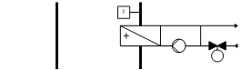
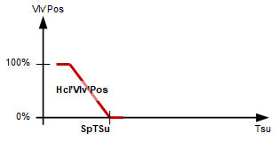
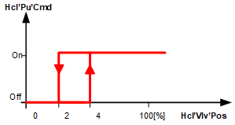
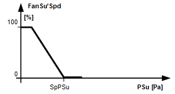

[HelloWorld21] 你好世界，第一个例子
工厂示例 HelloWorld21 具有变速风扇、热水加热盘管和截止风门。该示例展示了基本的 HVAC 函数并显示了工厂应用程序中最重要的概念。
Functions
- Supply air temperature control
- Pressure control
Plant diagram

Components
- Supply air fan, speed-controlled
- Outside air shutoff damper
- Hot water heating coil
设备示例的组件和功能：
成分 | 功能 | BACnet object |
|---|---|---|
| Fire detection contact 此__VAR_000__中，风道面积仅供用户参考；它不用于阻尼器位置计算。没有系数对象或系数计算逻辑。 | [BI]Fire detection contact |
| Manual operating mode selection 将工厂切换至：Auto | Off | On | [MCnfVal]Manual operating mode selection |
| Maintenance switch 将工厂切换至：正常 |维护 | [BI]Maintenance switch |
| Scheduler program 将工厂切换至：Off | On | [MSchedule]Scheduler |
| Present operating mode 报告当前操作模式：关 |在 | [MCalcVal]Present operating mode |
| Supply air temperature setpoint | [AcnfVal] 送风温度设定值 |
| Supply air differential pressure sensor 测量管道与环境之间的压差。 | [AI]Supply air pressure （位于 |
| Supply air temperature sensor 测量送风温度。 | [AI]Supply air temperature |
 | Heating coil |
|
向热量分配报告热水需求。 | > [BCalcVal]Hot water demand | |
防冻保护 防止热水加热盘管冻结。 如果防冻保护监视器触发：
| > [BI]Frost protection monitor | |
Pump |
| |
泵命令 根据需要打开/off 泵。 | > [BO] Command | |
Valve |
| |
温度控制器 控制送风温度。 | > [控制器]Temperature controller | |
阀门位置 控制阀门位置：0…100 [%] | > [AO] 位置 | |
| Supply air fan |
|
压力控制器 控制供气压力。 | > [控制器]Pressure controller | |
确定供气压力的设定值。 | > [ACnfVal]Setpoint supply air pressure | |
命令 根据需要打开 /off 风扇。 | > [BI] Command | |
速度 将风扇速度控制在 0 到 100 [%] 之间。 | > [AO]Speed | |
维护开关 关闭风扇和设备。 风扇输出以高优先级 (Prio 2) 被本地阻止。 | > [BI]Maintenance switch | |
| Outside air damper |
|
命令 打开和关闭外部空气风门。 | > [BO] Command |


 Supply air fan)
Supply air fan)


Temperature control

Supply air temperature control – Heating coil valve position

Key
Vlv-位置 | Valve position |
Hcl'Vlv'Pos | Heating coil valve position |
SpTSu | Setpoint for supply air temperature |
TSu | Supply air temperature |
BACnet objects
姓名 | 描述 | 对象类型 | 默认值 |
|---|---|---|---|
Hcl'Vlv'TCtr | 加热线圈温度控制器 控制送风温度。 | 控制器 | N/A |
温度控制器充当 PI 控制器（PID，微分作用时间 Tv=0），将温度设定值 [SpTSu] 与供气温度 [TSu] 进行比较，并计算输出上的阀门位置 [Hcl'Vlv'Pos]。 预设了以下控制器变量： | |||
Heating coil valve control - Heating coil pump command

Key
Hcl'Pu'Cmd | Heating coil pump command |
Hcl'Vlv'Pos | Heating coil valve position |
Supply air pressure control - Fan speed

Key
FanSu'Spd | Supply air fan speed |
SpPSu | Setpoint supply air pressure |
PSu | Supply air pressure |
BACnet objects
姓名 | 描述 | 对象类型 | 默认值 |
|---|---|---|---|
FanSu'PCtr | 送风机压力控制器 控制供气压力。 | 控制器 | N/A |
压力控制器充当 PI 控制器（PID，微分作用时间 Tv=0），将供气压力设定值 [SpPSu] 与供气压力 [PSu] 进行比较，并计算输出上的风扇速度 [Spd]。 预设了以下控制器变量： | |||
工厂运行模式：
- Off (1)
- On (2)
操作模式在 [MCalcVal] 对象“当前操作模式”上报告。
用于控制的组件连接到功能块 CMDSEQ_B，并且也由该功能块获取。见下表。
[CMDSEQ_B] Command sequence for binary
有正常模式和异常模式。
Normal operation
正常模式的来源：
- [MCnfVal] Manual operating mode selection
- [MSchedule] Scheduler
在正常模式下，根据功能块 CMDSEQ_B 中的操作模式、顺序和功能，以优先级 15 控制组件。考虑设置的超时和 /or 延迟。
Exception mode
异常模式的来源：
- Fire detection contact
- Faults in the components frost protection monitor and maintenance switch
在异常模式下，所有输出均以优先级 5 直接关闭，并且当前操作模式设置为“关闭”。这会通过输入 [RpdOff] 报告给功能块 CMDSEQ_B，并且从优先级为 15 的功能块开始，组件会立即关闭。
不考虑设置的超时和 /or 延迟。
特殊情况防冻保护：
在这种情况下，输出 [AO] 阀门位置和 [BO] 泵命令由优先级 4 的加热线圈打开。
特殊情况维护开关：
在这种情况下，输出 [AO] 速度和 [BO] 命令由优先级 2 的风扇关闭。
Components, sequence, and function in CMDSEQ_B
工厂运行模式 | 成分 | ||
|---|---|---|---|
| Hcl | DmpOa | FanSu |
Off | 离开 | 离开 | 离开 |
On | On | On | On |
| |||
Sequences |
| ||
启动顺序 | 1 | 2 | 3 |
启动功能 | 延迟 | 延迟 | AND （具有下一个聚合的组） |
启动延迟 | 10s | 15s | - |
| |||
停止顺序 | 2 | 2 | 1 |
停止功能 | AND （具有下一个聚合的组） | AND （具有下一个聚合的组） | 延迟 |
停止延迟 | - | - | 10s |
Start sequence
- The heating coil switches on. Switched after 10 seconds.
- The shutoff damper opens. Switched after 15 seconds.
- The supply air fan switches on.
Stop sequence
- The supply air fan switches off. It waits for 10 seconds (function delay).
- The shutoff damper closes and the cooling coil switches off (function AND).
姓名 | 描述 | 类型 | Signal/connection | 状态文本 | 工程单位 |
|---|---|---|---|---|---|
FireDetCont | Fire detection contact 报警功能：扩展（通知等级 7） 参考值：Tripped 时间偏差：0[s] | BI | NC contact | Normal | Tripped | N/A |
FanSu'PSu | 送风风机送风压力 | AI | 0...10 [V] | N/A | 0...500 [Pa] |
TSu | Supply air temperature | AI | LG-Ni1000 | N/A | 0...50 [°C] |
Hcl'Vlv'Pos | 加热盘管阀门位置 | AO | 0...10 [V] | N/A | 0...100 [%] |
Hcl'Pu'Cmd | 加热盘管泵命令 | BO | NO contact | 关闭 |在 | N/A |
Hcl'FrPrtMon | 加热盘管防冻监测 报警功能：扩展（通知等级 7） 参考值：Tripped 时间偏差：0[s] | BI | NC contact | Normal | Tripped | N/A |
FanSu'Spd | 送风风机转速 | AO | 0...10 [V] | N/A | 0...100 [%] |
FanSu'Cmd | 送风风机指令 | BO | NO contact | 关闭 |在 | N/A |
FanSu'MntnSwi | 送风机维护开关 报警功能：基本（通知等级 8） 参考值：维修 时间偏差：0[s] | BI | NO contact | Normal|维护 | N/A |
DmpOa'Cmd | 外部空气风门指令 | BO | NO contact | 关闭 |打开 | N/A |